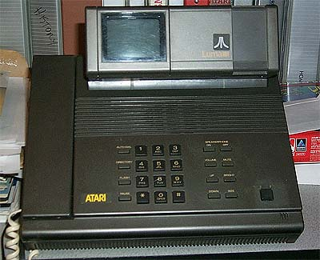
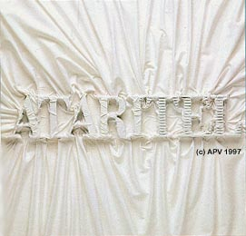
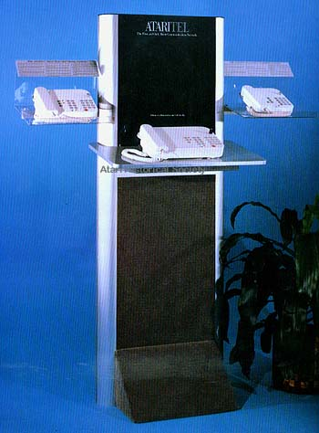
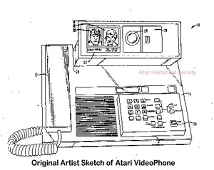

(test)


Long before the Tramiels came along and created the Falcon030,
Atari under Warner Communications had its own "Falcon".
Headed up by Steve Bristow, Project Falcon was Atari's all new division
in the making. According to Atari Press release brochures
from the 1983 CES, after nearly 2 years of working in mystery and secret,
Atari engineers had created a whole new line of cosumer electronics.
Under the Project Falcon name, all of the prototypes of the various products
were given names of birds. Features listed were as follows:
-
The Company will produce "a
new, dramatically capable home network
for voice communications,
communications management, appliance control,
security and environmental
control. The system incorporates new technology
and features not available
in other residential telecommunications products."
-
The AtariTel line will include
conventional telephones with advanced features and styling.
-
Two of the world's leading industrial
designers, Porsche Design and Morison
Cousins Associates were
commissioned to develop the product designs.
-
Customer shipments are intended
to begin in early 1984.

AtariTel CES demonstrator.
The largest of the telephones in the center of the
demonstrator was connected
to an audio track that would describe the many
features of the new telephones
as well as future enhanced features to come.
Photo curteousy of Erik Laba
Click
to view the ATARITEL
"EAGLE"
SPEAKERPHONE
Ataritel
phone designs
by
Porsche Designs
Click
to view AtariTel
Concept
Drawing
Original
Ataritel
"New
Business Opportunity"
Internal
1981 Document
(133
page, 5.5MB Adobe PDF)


The "Lumaphone", the
Atari VideoPhone in its finished form sold by Mitsubishi Electric of America.
The phones could
transmit an image in 3-5 seconds and could have a parallel printer
attached for printing out
images, also a TV could be hooked up to the unit for conference
room meetings to display
a larger image. This is a "Could've Been" Atari technology.
After the purchase of Atari's computer and video game division, Warner
Communications retained the arcade division and was left with the AtariTel
division which the Tramiels did not want, the key AtariTel engineer Bill
Briskoe and many laid off in the transition that worked from the other
divisions stayed at the AtariTel division. The Atari
VideoPhone was sold to Mitsubishi Electric and Bill Briskoe worked with
Mitsubishi to complete the project. The actual VideoPhone was
showcased on the front page of Popular Science at one time.
As for what happened to the remaining technologies that Atari worked on
in the AtariTel division, most of the features that were listed in their
press brochures and articles in magazines are seen today in products sold
at Radio Shack.
Atari Lumaphone Patents
(IBM Patent Database)
http://www.patents.ibm.com/details?&patent_number=4715059
http://www.patents.ibm.com/details?patent_number=4918718
http://www.patents.ibm.com/details?patent_number=4926245
http://www.patents.ibm.com/details?patent_number=4932047
http://www.patents.ibm.com/details?patent_number=4943994
http://www.patents.ibm.com/details?&patent_number=4985911
http://www.patents.ibm.com/details?patent_number=5042061
On
a sad note: The Staff of AVP was in contact with Jerry Silvia
of Mitsubishi's now shut-down Luma-Phone division. Apparently
we were too late in saving and preserving these precious pieces of Atari
history. Two years ago, Misubishi legal department requested that
all original Atari prototypes and paperwork involving the Luma-Phone videophone
project be destroyed. This is a trajedy which we hope doesn't
happen again in the future. If you are aware of anyone
with Atari prototypes, please contact the staff here as AVP and the Atari
History Society so that we may contact these individuals and preserve these
pieces of important history.
ataritel-info@atari-history.com
{kind=link}